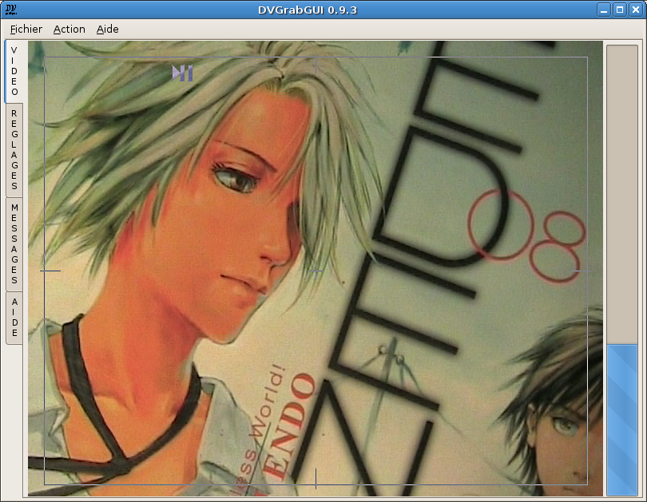

Pré: Référence → Fenêtre Vidéo --- ↑Home --- Suiv: Référence → Réglages → Capture
DVGrabGUI 0.9.4
Référence → Fenêtre Vidéo (mode "Petit")
Ce mode de l'interface a été conçu pour être utilisé avec un petit écran
tactile de définition 800×600, donc la fenêtre principale ne montre quasiment
que la vidéo dv!

-
Les quatre onglets de côté
Comme vous pouvez le voir, en mode "petit", la fenêtre principale perd
sa barre d'état, et les onglets sont maintenant sur le côté gauche.
La fenêtre "vidéo" perd également la plupart des ses contrôles, ne
conservant que la jauge d'espace disque…
-
La "petite" fenêtre "Vidéo"
-
Affichage vidéo
Cette fenêtre affiche le flux dv quand le thread de capture est
démarré.
Elle vous permet de démarrer/arrêter le thread de capture (clic
gauche sur la moitié gauche de la fenêtre), et…
Elle vous permet de démarrer/arrêter l'enregistrement (clic gauche
sur la moitié droite de la fenêtre).
-
Espace disque
Cette zone vous donne des infos sur l'espace disque total/restant
(pour le point de montage correspondant au dossier où vous avez
choisi d'enregistrer vos fichiers vidéo).
Pré: Référence → Fenêtre Vidéo --- ↑Home --- Suiv: Référence → Réglages → Capture
(c) 2006, 2007, 2008 Bastien Montagne (montagne29 chez wanadoo point fr).
Projet hébergé sur sourceforge.net/projects/dvgrabgui.